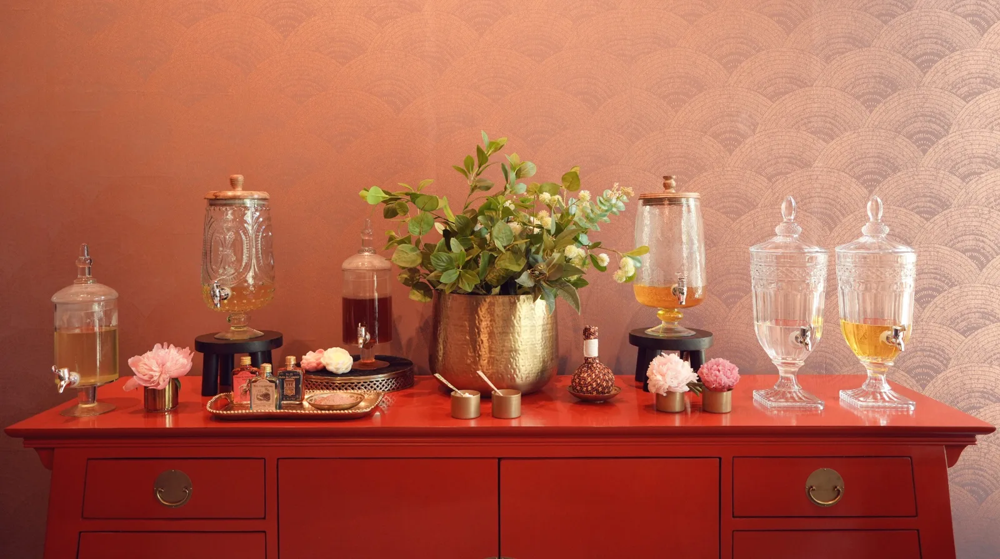

Techniques rooted in Thai wellness heritage.

BAAN D’OR · MONTRÉAL
About Baan d’Or
Thai hospitality, contemporary elegance and the art of caring for yourself.
Explore our treatments →
OUR HERITAGE
From Thailand to Montreal
Baan d’Or grew from a desire to share Thai massage traditions in a place where care and hospitality come first. In Montreal, we have created a retreat that brings together time-honoured techniques, personal attention and contemporary elegance.
Our aim is to give you time to slow down, find comfort and reconnect with your body.
A SYMBOL, A PURPOSE
The Bodhi leaf
A symbol of wisdom, balance and inner peace, the Bodhi leaf inspires our world. It reminds us to approach each moment at Baan d’Or with presence and gentleness.

OUR PHILOSOPHY
Five values, one caring approach
Care adapted to your comfort and preferences.
Thoughtful techniques and professional practice.
Time for body and mind.
A generous welcome, from arrival to the final cup of tea.
THE BAAN D’OR EXPERIENCE
The art of welcoming you
Included with every treatment, our welcome ritual makes your visit a complete experience.

A welcome drink
Take a moment to settle in.

The foot ritual
A warm soak and Thai herbal scrub.

Your treatment
A session tailored to your comfort.

A final moment of calm
Herbal tea and a Thai snack.
Meet our therapists
Discover our team and choose your therapist for your next visit.
Our Team →
MONTRÉAL · SAINT-PATRICK
A sanctuary in the city
From golden lighting to warm textures, every detail of our spa invites relaxation. Visit us at 2602 Rue Saint-Patrick in Montreal.
Plan your visit →Frequently asked questions
What does the welcome ritual include?
A welcome drink, warm foot soak, herbal scrub, followed by tea and a snack after treatment.
Can I choose my therapist?
Check available therapists when booking on Fresha.
Where is Baan d’Or located?
At 2602 Rue Saint-Patrick, Montreal, Quebec.
Can I adjust massage pressure?
Tell your therapist your preferences before and during treatment.
Your retreat begins here
Explore our rituals and choose the one that feels right for you.
Book now →